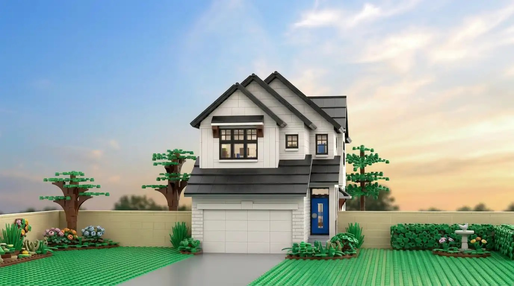
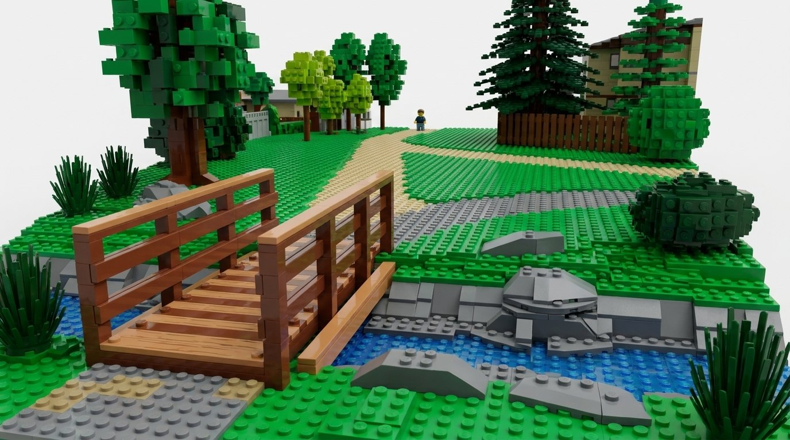
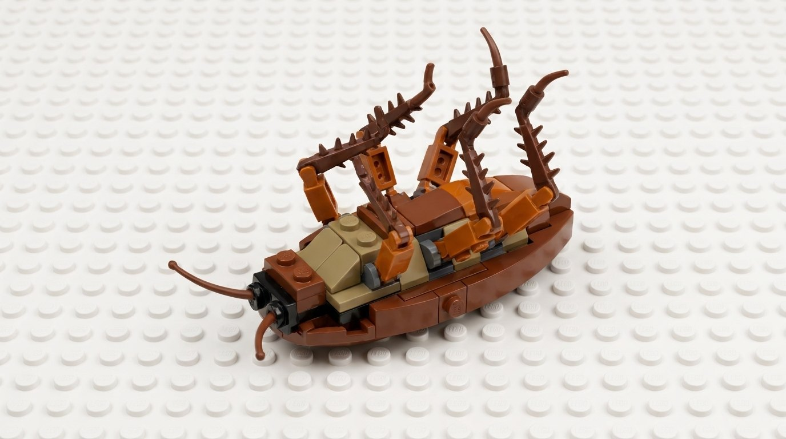

Crafting visual
systems
I'm a Senior Graphic and Web Designer with over 26 years of experience helping brands build lasting visual identities.
My work spans everything from digital platforms and responsive web design to large-format environmental graphics and brand strategy.
Whether leading a full website redesign or shaping a brand's core visual language, I focus on creating clean, functional design systems that connect with people and scale across every medium. I bring craft & taste to digital work.

Homes by AviWeb · Brand · Print
CMCAWeb · Identity · Print · Social
ArchiveSelected work